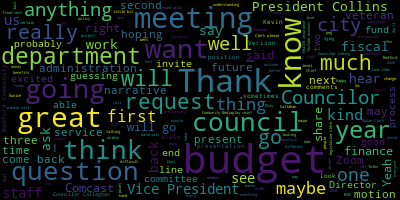
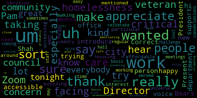
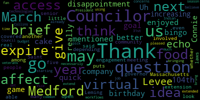

[Bears]: City Council, Committee of the Whole, April 17, 2024. Madam Clerk, please call the roll.
[SPEAKER_03]: Councilor Fallon? Present. Vice President Collins? Present. Councilor Lazzaro?
[Lazzaro]: Present.
[Bears]: Present.
[SPEAKER_03]: Councilor Scarpelli?
[Bears]: Councilor Scarpelli is absent due to illness, but said he would be paying attention.
[SPEAKER_03]: Councilor Tsengeed? Present.
[Bears]: present six present one absent. The meeting is called to order. There will be a meeting of the Medford City Council Committee. The whole at six p.m. in the City Council Chamber, second floor, Medford City Hall, 85 George P. Hassett Drive, Medford, Massachusetts and via Zoom. The action and discussion item for today is 24-045 Annual Budget Process for Fiscal 25 Preliminary Budget Meeting. And we, I'll just go over the calendar again for the budget process. We are following the soon to be finalized budget ordinance which is eligible for third reading on April 30th but we have agreed to implement it already which is great and that started with individual budget recommendations submitted by councillors to the council by March 1st. The council submitted a collective budget recommendation to the mayor by March 22nd And now we are in the April 15th to May 15th, 2024, where we are holding preliminary budget meetings with department heads. Tonight we have the Council on Aging, Medford Community Media, and our Veterans Services Department. And this is our first ever preliminary budget meeting under the new budget ordinance, so I'm excited for it. I hope everyone's excited as I am. But I think really just to go into that for a minute, I again want to thank the administration for this new process that we're working under. The idea of these meetings is to hear from departments what they've requested before we get the budget so we can have some discussion, some input, hear what departments are thinking and wanting, and then obviously understanding what our fiscal limits are with what we're actually able to fund at the end of the process. We'll get the budget. see what the differences are, be able to come back and invite departments back if they need to come back. The mayor can invite, the council can invite after the budget is submitted, so that would be in June. If what you present here today is what ends up in the budget proposal in June, then I'm guessing we're probably good to go and we'll have one meeting. Of course, if you want to come back, or if the mayor wants you to come back, or we do just for fun, maybe we'll invite you. But that's really the scope of the meeting tonight. And we also received, thank you, Madam Chief of Staff for the budget to actuals up through quarter two. and some other materials. And then next Tuesday, we'll be meeting with the finance director talking about the legislative clerk and finance department budgets. And we will also be talking about a general top line presentation of the city budget for fiscal 25, which I think will be Good, good to get going on sooner than later. We all have been talking about for over a year now. And really, since I've been on the council, the difficult type budgets that we've had this year, we have the fiscal cliff of the federal funding from ARPA and ESSER that are no longer going to be available to the city. It is going to be an important budget season, and I'm glad that we are moving ahead with the process as we are. So with that, I will go to the Chief of Staff, if you want to say anything up front, since this is just our first meeting, if there's anything else you want to add, and then we can go through in order. We'll go with Council on Aging, and then Medford Community Media, and then Veterans Services. And I'll ask a few questions, and then Councilors will be able to ask some questions as well. we're going to have a meeting with the city council after a presentation.
[Nazarian]: So when I'm chief of staff, thank you very much. President Bears and members of the committee, the whole City Council. Um. This is an exciting time. I'm I think we all feel very positively, and it's a great opportunity to have initial budget discussions. Um. As you know, we have three budgets here. Three departments here. Three based on this process moving earlier than it has in the past, meaning these meetings occurring earlier, we are actually still in the formulation of the budget, as one can imagine. Normally we would be formulating the budget and then submitting it, as President Bears alluded to, As we did last year, one of the first earliest budgets that was submitted to the mayor's recollection on May 31st, but we're even going as fast as possible, and we're here before the council tonight to discuss three budgets and then, as President Bears said, a couple more budgets next week and even more after that. As we have many dates scheduled, so we're very excited, but I. admit at this time we're still formulating and which means we're still going through a process to determine how to close a budget gap. We've been working through that budget gap for the last few days, essentially, and we feel like we're in a decent place. We, I will say from the outset, we didn't really provide any major limitations to any department heads. There really, really was a short of do not send us your wish list, there was no limitations placed on department heads. So, you know, everyone submitted their budgets as they needed, which with ARPA, you know, coming to a close December 31st for things that are not contracted and for things that are operational that are staff in particular, when I say operational, I really mean staff, that's coming to an end December 31st. And so with all those things into consideration, we are in a very good place, all things considered, because there is a large cliff. We want to invest more into the various areas that the council has provided as guidance. The reality of that may be somewhat challenging, but we are where we kind of hoped we'd be at this stage considering where we were a number of years ago in terms of reliance on one time funds. So we're definitely almost if not completely off of those one time funds in a good place, working to close the budget gap. I think it's I think it's reachable, but we just have to continue to work through the numbers. So we don't have a high-level presentation for the council tonight. As President Bears said, that high-level presentation would be on Tuesday of next week. We look forward to that. And thank you very much. Are there any specific questions for me? I'm happy to answer them.
[Bears]: Any questions at this time, or do we want to hear from the departments?
[Tseng]: Councilor say not a question, but I just wanted to thank you for being here to thank the administration for working with us on the new budget process. I think. I, as one Councilor, I'm very excited that we're getting to such an early start. I think it really helps us city to know what our. what our reality is quite early on, and also to know what our department's looking for, what can we actually afford as a city to have those discussions early on to lay the groundwork of transparency. So thank you very much, and I'm very much looking forward to these discussions.
[Nazarian]: Likewise, thank you on our behalf as well.
[Bears]: Thank you. Any further comments, questions by the council before we move to our first department? Seeing none, we will go to the Council on Aging, Director Kelly, and, you know, basically just some standard questions. You've done this before, so you get to model it for everybody. We'd love to hear just what was your budget request for the year, and then kind of anything you want to share narrative-wise about your year as a department. And then I'll ask a couple more follow-up questions, and then we can go to questions from the Council. So, welcome.
[SPEAKER_06]: Thank you. Welcome. Thank you for having me here tonight. And yes, this isn't my first rodeo, but I'm very happy to meet all the new Councilors here. My name is Pam Kelly, I'm the director at the Council on Aging, and we are requesting a complete municipal budget this year of $275,226.79. This covers primarily our staff payroll. Too close. and then our ordinary expenses. So we did have a slight increase from FY 24 due to the increase for the clerical union, an increase in the RICO contract and updated office equipment. Other than that, our budget has been pretty much level funded the past couple of years. We do a newsletter every month that shows all of the different programs, activities. Many of you have been to the senior center and see all of the different programs, activities that we do on a daily basis and all of the seniors that come to the senior center. Based on the 2020 federal census, there's 12,766 people age 60 years of age and older in the city of Medford. We have one of the largest senior populations in the surrounding communities. Granted, I don't see that many people coming into the center on any given basis, because we'd still here to this day. I'm not going there, that's for old people. So one of our... goals over the next few years is to reach those younger seniors because we all age every day. And we want to make sure they know of the resources and information that we have to offer them. We don't want them to wait for a crisis, we want them to be involved earlier. I believe you all seen our narrative of things that we're going to be doing over the next year, and I will present to you our budget. And now, if you have any questions for me, that I will be happy to answer.
[Bears]: We haven't seen the narrative yet. Oh, you haven't? I do apologize. No, that's if you want to read us through it, maybe an advanced copy. This is our first one, so now we have some comments. Okay.
[SPEAKER_06]: All right, well, I can read the narrative if you'd like.
[Bears]: Sure, yeah, if you want, or even a high-level summary.
[SPEAKER_06]: I'll read you a quick description. Some of our highlights for fiscal year 24. We served 33,769 duplicated participants at the senior center over 191 days that we were open. On average, the senior center is averaging 177 people per day. Nutrition was the focus for fiscal year 24, with 1,347 older adults receiving bags of groceries during a nine month period. We have the food pantry twice a month. which is for Medford seniors. There's no other requirement, just that they are a Medford senior and that they do have our participant card. So we are able to check who's there and to keep these numbers for all of us. We also had 315 filled bags of groceries donated by Tufts Health, Melrose-Wakefield Outreach. We dispersed 65 farmer's market coupons valued at $65 each to, again, Medford senior eligible residents. We've distributed 200 stop and shop gift cards. I'm working with Mystic Valley elder services who received a $25,000 grant. I'm sorry, opera grant to assist Medford older adults with nutrition. Senior produce via Medford Farmers Market did a home delivered of 30 bags a week for 10 weeks to Medford seniors who wanted to participate in that program. We also wrote a Tufts community grant for $3,000 that was just for nutrition, again to help the seniors that come to the center. We received food donations from Medford Rotary, the Medford Police, Medford Boys Soccer Group, and other business partners. That's all in just one year. We are continuing to increase and promote activities and programs, as well as provide information to the public in a variety of ways, including more of a presence on the social media platforms. We had a multi-partner senior scan presentation, provided much needed resources and information to the most vulnerable in the community. We're looking to have that again this coming September. Our social worker, who's new, she started last March, has been outreaching more and showing more of a presence in the city to homebound seniors and to many of the senior housing buildings. Our goals for the future is to expand our initiatives in an even more organized and planned way to achieve identified marketing strategies that will not only promote the senior center, but assist in developing growth through new membership and participation. We also want to continue the opportunities to research and write grants to expand our financial goals, continue our collaboration with other city departments, organizations, and business partners to create opportunities for our participants. We want to collaborate with peers in the industry to see where the future is going for the next generation of older adults. One of our goals for hopefully this summer is to outreach by taking our van on the road to different areas of Medford to connect to older adults in the community who do not come to the center. So we're gonna go to them. We want to create and distribute a new survey for residents 60 and older and research the unmet needs of our target audience and to create the means to assist with those needs that they survey back on. Our goal is to reframe aging to be about the journey and not the destination. Thank you.
[Bears]: Great, thank you so much. My only other questions are, were there any other programs that you didn't request this year that you might request in the future or any kind of future investments you're hoping to see from the city and the center?
[SPEAKER_06]: Well, as we're growing and as the demographic is growing, I do see a need for future staff in our building.
[Bears]: Got it. And just my only other question, and this is just for me looking at the, I know you have your position and the office manager position and the social worker position part-time in the budget. I do see there's a community outreach coordinator on the city website. Is that a grant funded position?
[SPEAKER_06]: That is a state funded position.
[Bears]: State funded position, great.
[SPEAKER_06]: And also building maintenance is also on the municipal. Great position.
[Bears]: And that is the yes. Sorry about that. My bad. Miss that one building maintenance as well. And my only other note, it just there's an office manager title on the city website, but then it says administrative clerk in the city budget. And I was just wondering if there was a if there's a reason for that, or is that just technical?
[SPEAKER_06]: Her role, I think it's just more technical. Her role is more overseeing the office and we use and utilize a lot of volunteers at the center to man our reception desk, answer phones and do multiple things. So she does oversee that program. And so I think for just
[Bears]: Yeah, it might be something we look at in the classification. Absolutely.
[SPEAKER_06]: I believe classification in the future because the role has changed.
[Bears]: Okay, great. Great. Thank you so much. Those are my questions. Any questions or comments from members of the council?
[Tseng]: Thank you so much. I with with Councilor Lemmy and Councilor Lazzaro a few weeks ago, we were at the Senior Center. We attended.
[SPEAKER_06]: There were so many people there for Connie Spinelli's 104th birthday.
[Tseng]: Pretty good. Remarkable, truly remarkable with a huge turnout for the bingo game as well, which we sadly didn't win, but we got super close. We were one or one square off in the two of the matches. There's so much good stuff happening at the senior center that's coming out, and really thanks to your leadership as well. I think there are two quick questions I had, given what you've told us today. I think on the topic of nutrition, there seems to be tons of donations coming in, tons of help from, for example, from the Greater Boston Elder Services. And some of that is coming from ARPA grants that Of course, we're running out of that money as well. And I was wondering, do we foresee being able to keep up with this level of food donations for the upcoming year?
[SPEAKER_06]: Yes, I do feel that we can keep up with the donations, especially, for example, during COVID. The community itself, as a whole, really stepped up and helped. When we had to close our doors, we were able to have the food pantry filled inside the building, and then he passed the bags out the door. And a lot of times we had people from the community donating. They'd go to BJ's and pick up stuff. They'd go wherever. They'd give us gift cards. So, I don't feel that we'll have a problem. We work closely with Mystic Valley Elder Services as well, who provides the congregate meal every day, well, Monday through Friday, and the grab-and-go lunches Monday through Friday. So that is contracted through them. The Mystic community market is the food pantry provider. And I don't believe that comes through ARPA.
[Clerk]: Okay.
[SPEAKER_06]: So I know that that right there, it covers quite a bit of our programming for nutrition.
[Tseng]: Awesome. I meant, I meant Mystic Valley Elder Services. Sorry, getting acronyms mixed up in my brain.
[SPEAKER_06]: Oh, that other grant that I mentioned for $25,000, that is above and beyond what we receive on a normal basis from Mystic Valley. This was an additional program that they reached out to the city of Medford for, received the funding, and now they're giving it back to Medford by nutrition through Meals on Wheels, the senior center, and other multiple resources.
[Tseng]: I see. Now with that ARPRA money going away, are those offerings staying on?
[SPEAKER_06]: Well, that offering won't be on. However, Mystic Valley is always working on writing grants. Mystic Valley represents 11 different cities and communities, so they're always looking for additional funding to help in the communities.
[Tseng]: That's good to know. Thank you. And one other question coming out of what you told us. I guess you said one of the goals moving forward is to expand the grant writing capacity. How do we do that? Are there people on your team who are working on doing that? Do we need eventually more staff to help that?
[SPEAKER_06]: Yes, it would be helpful in the future to have additional staff that are focused on grant writing because there are so many that we can't write possibly all of them. However, my staff assists with different grants. For example, the local cultural council grant. Grace, who is under the state financial payroll, writes a grant through the local cultural council and thankfully, has been successful every year in getting some funding that brings in, for example, entertainment and cultural events and programs to the senior center. So she writes that one specifically herself. We coordinated this year with myself, Grace, the volunteer outreach coordinator, and the social worker on writing a Tufts grant that is focusing on mental health this year. We wrote that maximum amount is for $3,000. We wrote that for $3,000 and we hope to hear soon that we will be successful in that grant.
[Tseng]: Fingers crossed. Thank you so much.
[SPEAKER_06]: Thank you.
[Leming]: Councilor Levee. Thank you. Thank you. I'd also like to echo my disappointment that I didn't do better in the bingo game. Connie is 104th birthday, but I really enjoyed the cake and the company. Uh, just a quick, just a brief question. If you just give us an idea of this. So you mentioned that you had a goal of increasing engagement among the senior community. in Medford, about a little over 12,000 people, you said. Can you give us an idea of how many more you think you'd be able to get involved in the next five, 10 years, and what do you think it would look like?
[SPEAKER_06]: Well, my goal is always to, any increase is better than no increase. But of course, working with the demographic, people age out, and more people age in. So it's always up and down. We wanna just continue that role to have people know about us so that as people are aging out, we have people to fill that spot.
[Clerk]: Thank you.
[Bears]: Vice President Collins.
[Collins]: Thank you, President Bears. Thank you so much for being here. Thank you. I always appreciate your presentations come budget time. My fellow Councilors have covered a lot of my questions at this point, which are pretty basic. I know your department's budget is pretty straightforward, and this is pretty early in budget season, so it's great to be having the conversation now. But just want to take a moment to recognize you for the hard work that you and your department do. All year, we know that senior centers institutionally wear so many hats. You're providing basic services. You're also providing fun and community. It's a lot of balls to keep in the air and on a pretty tight budget as well. So just thank you so much for your resourcefulness and for all that you provide.
[SPEAKER_06]: Thank you.
[Collins]: I hope that this council can remain supportive as senior centers programming and offerings continue to grow. Thank you very much.
[Bears]: Thank you. Well, I've seen no other hands raised. I think I'll try to summarize, but basically it looks like about an $8,000 increase from fiscal 24 to fiscal 25, and it's all in your fixed costs of the union contract and some equipment costs that went up.
[Lazzaro]: Correct.
[Bears]: Cool. and all the other amazing things that you're doing as well, but we'll just boil it down to the brass tacks for the budget meeting. Yeah, so at this point, thank you so much for the presentation. We love all the work you do. Obviously, feel free to engage us any time of year in any way that we can be helpful. If there's ever anyone we want to recognize, if you want to pass along all the 100th birthdays for us to put on for commemorative resolutions, we're happy to do that. Thank you. We will await to see the budget presentation and I'm guessing that if it's 275, 226, 79, then we're going to be all set and ready to we won't have to have you have you back to do another run through the through the machine. So we're hoping for that. And thank you so much for everything that you guys do.
[SPEAKER_06]: Wonderful. And I welcome you all to stop by the senior center at any time. I hope you're all getting our newsletter every month so that you see the activities that go on in parties. We welcome you to come by.
[Bears]: Great. Thank you so much.
[SPEAKER_06]: Thank you.
[Bears]: All right. All right. One down, two to go. We will go next to our Medford Community Media, Kevin Harrington, to present his budget for fiscal 25, budget request for fiscal 25. And Kevin, just if you wanna start off with what your request was, maybe how that differed from last year, and share a little bit of what, like Pam did, what your department's up to, what you're hoping to add, and see you over the next year.
[Harrington]: sure thing uh thank you president bears um hello everyone i'm kevin harrington i'm the station manager for medford community media um and for the upcoming fiscal year we are proposing a total budget of 204 427 and 37 cents um and most of our line items are staying the same the only exception is line item number 010-190-5730. Dues and subscriptions, we will be increasing that. We're proposing to increase that by $3,000, which I can get into momentarily on my requesting that. But yes, I would also, similar to how our director of the Council on Aging was able to sum up her department very cohesively, we are a, I think of Medford Community Media as a resource. We are a resource for the community, both in the sense that people can come to our station, they can put on programming, they can record shows. of pretty much any content they want. We are also a resource in terms of our municipal meetings, including this one right now, just for a nice fourth-wall-breaking meta moment. And, you know, there's a reason why PEG Access has the PEG acronym, public, education, government, and all three of those letters are interests that we have to be, you know, attending to throughout the year. And our continued mission is to literally give access to the members of our community. As I'll mention later in the narrative, we're hoping to grow our membership every year. When I started in 2021, having people come in person was still a little bit up in the air. There was a lot more people staying home. There was a lot more mask wearing if you did come in. And we definitely saw in the past fiscal year, people's increased comfort of coming in to the studio and, you know, hoping to get some new members as well. I also, in years past, I have neglected to give the requisite amount of appreciation to all the various folks that help out with MCM, including full-time staff, part-time staff, our per diem staff, So especially for meetings here in the chambers, we have Shane Colbert, MVTHS graduate, who is dutifully here well into the wee hours of the night, as is, well, you know. 2 a.m.
[Bears]: Shane, that's what we call him.
[Harrington]: And that's, honestly, that's part of, this job that's part of our department as we are there to to survey and to just to provide that, you know, access and transparency. But I also want to shout out John McLaughlin. will cover school committee as well. Both of those folks have done a tremendous job in those spots. We've also had some of our part-time employees will cover these meetings. I'll get to them in a moment. I want to thank, we have last year, we were able to get approved a line item for our part-time salaries. So we have co-ops from the vocational technical high school. They're both seniors. They'll be graduating shortly. Patrick Keene and Sam Buxton, we've had them alternating weeks. They've both been really excellent. They both brought their own strengths to the station and you know that that position is also meant to be a reciprocal kind of endeavor, it's learning experience for them as well. So they're getting the paid experience, they're getting professional experience, but it's also to help learn on their way out of the vocational technical high school. But of course, our Previous, the production coordinator we started with this fiscal year, Kat Darnell, she changed to work at the vocational technical high school. So while it was tremendously sad for me to know she was going to be leaving in July, she didn't go that far. She went down the hall. So there wasn't there wasn't too much. It was it was tolerable. We see her plenty. And then we've had Sarah Pendenza has taken over in the production coordinator role as the other full-time employee. And she's just hit the ground running, currently in the booth right now, probably blushing slightly, and has just been really excellent helping out. And also just wanted to, before I get into sort of the more nuts and bolts stuff, I don't often get in front of the camera. I'm usually behind the camera in the control room. I want to thank all of our viewers. I want to thank all of our members, people who come and create shows and want to encourage, you know, I don't know if this violates a rule or anything to try to recruit for members during my budget presentation, but I honestly want to encourage people, if you want to come to our station, check it out, apply for a membership. It's there for you for $0 to express whatever you want. And honestly, if it's protected by the Constitution and it's not commercial speech, you can have all sorts of creative expressions. In any event, very quickly, I'll go through our, because I believe you said you don't have the narratives in front of you. Okay. So for our fiscal year 24 highlights, we covered several local events, including the mayoral debate, which I think was was quite a success and we did with limited staff we were able to put put that together the MLK Day celebration in January was a highlight as well as. last year's commencement and we also collaborated with the media tech shop at the vocational school for their women's history day event. We've updated some equipment including the audio mixing console we use on the mayoral debate, we added the co-ops, we also undertaken a project where We've had challenges with digital storage, especially now that videos, especially if they're decently high resolution, get bigger and bigger and bigger. We were able to really successfully cut down on some of the data that was stored on our main CASUS unit so that we don't get any performance issues, and that was a very all-hands situation. We were also... I'll sort of slightly skip ahead and mention one of the challenges was we had we were flooded in January, along with the high school, which I'll put in the, we, we handled it but wouldn't repeat it if I had the choice category, but we were very lucky, and we didn't really lose any equipment. And that just helped bolster our already existing safeguards of how we store, you know, electronics that are very, very, very susceptible to water damage. And as a result, we were able to actually inventory a lot of gear. We were able to purge a lot of no longer functioning or unnecessary electronic goods and have that disposed properly. And then we also installed the new monitor displays that were provided, I believe, with the budget. I was able to work with Clerk Hurtubise and President Bears with that. So we have these nice big screens and the additional smaller screens down there. And we are continuing to progress. Speaking of ARPA funds, the only ARPA funds that I touch is our audio upgrade. that we will be, we are very, very close to getting that finalized, to be accepting a quote, and we'll be hopefully be able to move forward and get a contract drawn up. And my goal is to get that installation going in the spring and summer, so that by the time the fall comes around, we've got a nice souped up delegate microphone audio system, and we'll be able to hit the ground running. And then just briefly for some of the goals, there's some, um, we have the video switcher that's currently being used at this moment in the booth. We'd love to be able to upgrade that if we can. Our equipment budget is 30 K. So that can be limiting for big ticket items, but it can be decent for a lot of most upkeep things like cables and batteries and stuff are pretty, pretty doable, but something like a video switching system might be a little bit different. So we might have to get creative. That's how we want to upgrade that. We are hoping to add an intercom system to the control room so people can use headsets. And we want to continue our community outreach through social media. One of the things Sarah has been doing quite a bit of since she joined is using our Instagram, using our Facebook to not only notify when we have meetings, but also just posting every once in a while of, do you want to do a podcast? Come check out our stuff. Just that kind of, I guess I don't need to mansplain outreach to you guys. You understand what I mean. And yes, and then we would also try to, once we get our feet kinda under us, we're continuing to document things better in general, and we're hoping to relaunch regular classes. At the moment, if anyone comes in as a new member, we do individual classes to train them up, but we wanna get the regular classes back, so that's a goal for us. So anyway, I can be prone to ramble and be a little bit, Is it lacrimose that means you're long-winded, or is that? It's a good one, right? Yeah, verbose is the one most of my family uses, but I'm open to any and all questions and follow-ups that you may have.
[Bears]: I will ask no questions about SAT words. But I do the one other kind of standard question, just as you kind of went into it a little bit, is there anything not requested this year and this year's budget request that you're probably looking for in the future? It sounded like maybe in the future, some capital related stuff around video switcher, but anything on staff side, personal side that you're looking towards that you knew we weren't going to go for this year?
[Harrington]: Yes, so like the two things like the two kind of like blue sky items that would be really great to have would be one an additional like non-co-op role that would be either part-time or full-time would be really helpful because you know the co-ops are excellent but there's some limitations of what they can do And we're not allowed to bring them in cars and stuff to go places, which is obviously understandable, but then can make for logistical challenges if you're trying to have someone go cover something and leave the grounds. So that would be really, really nice to have a 3rd kind of permanent employee. The other would be to upgrade our lighting system in the studio. It's serviceable at the moment, but it's mostly, you know, we're basically using circuit breakers to turn the lights all the way on and all the way off, which I think is okay in a, you know, with the amount we're using them, but not like a great long-term solution. We, a long time ago, got a quote for a lighting system upgrade that was above $40,000. So it would qualify for sure as a capital expense. And even under our old line item for equipment, it would still have reached above that 10K threshold and all that stuff. So those would probably be the ones I could think of.
[Bears]: Great. Well, thank you. You know, I just want to say personally, thank you. You're one of the departments we work with the most as you're broadcasting our meetings. And, you know, Sarah's been great. And we miss Kat and we miss you filling in in the interim. You know, but we, you know, and I've been really grateful to work with you on this ARPA project that we are. We're crossing the finish line on after floods and staff shortages and a variety of other natural and artificial disasters. So it's going to be great, I think, just to talk about the project really quickly. We're going to have a significantly improved audio quality for folks in this space and online. I think especially for online, I believe we're going to have the ability to change levels of microphones to adjust for different volumes of speech, which we currently can't do. And sometimes we go from a pretty quiet talk to a pretty loud talk. And the last thing you want is the mic all the way up for someone speaking quietly and someone chimes in loudly and we blow out everyone's TV speakers back at home. So I think that's going to be great. And we're going to have a little bit better meeting management as well. And maybe a few fewer taped cables on the floor, which I think will make us all feel better. So that's been really a great project to work on. Really excited for MCM, hoping to get classes back and, you know, It's just a great, great stuff that you're doing. So hopefully we can expand it a bit more in the future. And I will go to Councilor Callaghan, Councilor Tseng, Councilor Leming, Vice President Collins. Appreciate that, thank you.
[Callahan]: Thank you. I'll use this opportunity to thank everyone for coming out. Just save a little bit of time. So appreciate your work that you do every day as well as the time that you're taking in an evening to be here. My specific question for you is how much funding comes from the cable companies and sort of what percentage of your budget is that? Just curious about that.
[Harrington]: So as far as I understand, both Comcast and Verizon, that money comes into the city and that goes into my budget. I don't exactly know. you know, in between kind of those connections, you know, kind of how it gets managed. As far as I know, most if not all the budget we have is from those sources. But that I don't know, because I don't get those like statements or receipts mailed to me directly. The only thing I do know what I was able to get a report from Comcast that basically over what would have been, yes, fiscal year 24. The total was $236,376.92, just from Comcast alone. Verizon did not get back to me. Thank you. Thank you, Councilor Tseng.
[Tseng]: Thank you. I wonder if the L word you were looking for was loquacious. Ah, it was loquacious.
[Bears]: Should we talk about a certain admittance to a certain school of a certain sweatshirt?
[SPEAKER_08]: That's why you're wearing the sweatshirt. No, this is me running from Cambridge. Harvard Law Advice Councilor Tseng you can always tell a Cornell man.
[Tseng]: Um, I, I was wondering if you could speak a little bit more to the increase in dues and subscriptions. Um, yes, thank you.
[Harrington]: Thank you for reminding me that. Yes. So that is for, so our dues and subscriptions line item was created last budget season because we were using a lot of those services and it was all funneled under equipment and that seemed to be kind of not. A proper and accurate description and what that mostly involves is our Verizon Internet service that we have for the office itself. A lot of the things that we use to just operate like keeping our website and our domain. The Castor IO service, which helps us live stream. And so Castus is basically the actual piece of hardware, the quick roll for, is what sends video to our two channels, among other places. It also sends video to our video on demand platform. And I'm mentioning those because that's where the kind of increase comes in. So there's annual fees that we pay to CASAs every year. And part of it is the, I have it written right here. So we essentially, we have support and maintenance, that's 1200 every year. And then the additional is for our video on demand platform. So our video on demand platform, if you go to medfortv.org and you click watch MCM, and you see a sort of, old-fashioned looking YouTube-esque scenario with video thumbnails and the ability to watch live and watch old stuff, that's our VOD. That's what we call it, our VOD. So that VOD, I found out from talking to CASTIS support, is called Old VOD in their parlance, which Again, I'm more of a video guy, but I'm like that sounds like something that should be updated And so we looked into the pricing of that and so essentially what we would be able to do is that We are basically going to upgrade. So essentially for the entire year, we were paying $3,695. And then the upgrade that we are budgeting for would be a total of $6,198. So the $1,200 would be for the regular support and maintenance. It would be $3,999 for the CCS 1080p. That's the name for the kind of updated cloud-based FOD we would do. And then there's a one-time migration fee of $999, so essentially $1,000. And so essentially, that would then get reduced in years forward. It would only be... $5,199 because that one-time fee wouldn't be included. So I essentially rounded up because the actual increase from what we have to what we're hoping to get was about $2,503. And so I decided to round that up to $3,000 to allow for any and all price fluctuations, additional fees, hidden fees, that kind of thing, so that we'd be covered. The goal is if this budget is, oh, that was a close one. If this budget were to be approved, we would then be able to go forward with CASIS, migrate the data, and our new VOD would be a better user experience. It would be more reliable. It's easier to maintain. And I think our VOD, you know, that's how most people watch our meetings. you know, they might watch them live on their channels, but a lot of times they go to our website and that's where they go. So I feel like that's such a mission critical part of what we do. So I was hoping to upgrade that going forward. Thank you so much.
[Tseng]: That was so well explained. Let's just make sure we don't have to spend even more to buy a new computer. Yes, exactly.
[Harrington]: I almost loquaciously destroyed this computer.
[Leming]: Thank you, Councilor Saint, Councilor Leming. Thank you. Just a real brief question. So, virtual access as a virtual access being covered by open meeting laws had to expire in Massachusetts March of next year, which may or may not go through, depending on whether or not the governor. puts another extension to it. But my question is, if that does go through, and this may not even necessarily affect this budget season, but if it does go through, would that affect your job at all? Or just the technologies you're using, the workflows and so on?
[Harrington]: So I would say There's plenty that it wouldn't affect. Like we still would be, the way we currently cover these meetings, we would still be able to have, you know, if essentially you weren't having anyone on Zoom anymore, it might make some things slightly easier. We would actually probably still use Zoom on like the backend in order to access our broadcast, just cause it's a kind of like, it's a fairly, It was a good, my predecessor came up with it as a workaround. The thing that would be challenging to answer that question a little more directly is some of the meetings that are not here in the chambers, for instance, you know, the charter study or zoning board of appeals, if those all had to go in person. we would have to look at where are those going to be and how would we be able to broadcast those, to continue to broadcast those meetings as we were when they were Zoom only. So it would definitely be a challenge. It would be something that, and you said, is that March of 25?
[Leming]: March 31st, 2025 is when it's set to expire. I believe they've already extended it once. They could extend it again,
[Harrington]: Yeah, no, that's an excellent question. I appreciate you bringing that up. So I'll have that on my radar. Yeah, it would definitely be doable, but would require preparation for sure. It would require a decent amount of planning to make sure that all the I's are dotted and D's are crossed if that was to expire.
[Bears]: And I would just throw out two things on that. I believe the administration has a remote participation policy of some kind. We have also, so that would be for boards and commissions, and I don't know what the school committee's policy is. We have in our rules said that we will permanently maintain virtual access. The only thing that the change in state law would change would be the presence of Councilors. So virtually present Councilors would not count towards quorum if that law were to expire, but they could participate remotely and we would still, we've put it into our rules to maintain the virtual access as part of council business going forward. I don't wanna speak to the intent of the administration's policy, but when I said, hey, Steve, link to the records, he said, hey, we already linked to the policy. So I'm guessing they might be in the same ballpark of some kind, but I also know that there's just been some dispute in the legislature about the specifics of making it permanent and how that applies to towns and communities. I mean, I think it applies here in Medford, quite frankly, you know, it's another, I think it's a great value. I think the MMA and some other cities and town governments have said it was an unfunded mandate. We don't have the technology and resources to, we don't have the money to pay for the technology resources and staff to maintain the system. So if the state requires it is the state going to pitch in some funds and I think there's been disputes as to what that would look like and who would be eligible, and if the state is going to create some sort of fund that communities can apply for grants from or not. So I'm hoping that. I'm hoping they work that all out. But for us, I think we should be good for the council. Although we have had some requests to go back to meeting in the smaller committee rooms and maybe the more collegial atmosphere that that enshrines. So that may be something to discuss as well. not to steal any, for some reason I read too much. I will go to Vice President, unless you're done Council, do you have more questions? No, I'm good. All right, cool, Vice President Collins.
[Collins]: Thanks so much for being here. I don't know, the whole soft speakers, loud speakers, I don't think it's an issue, I never hear about that. But you know we're reaping the benefits of some of the improvements that's been made over the past year with these additional monitors. That's really helpful for Councilors I hope that there's been some benefits for folks in the audience as well and it's. Great to hear some of the things that are in the percolator for continuing to expand access for making the meetings more accessible, even within the chambers. I know, not because of anything that has to do with your department, because of this room and its acoustics, we frequently hear from folks, you know, gosh, it's really hard to hear kind of no matter what. So it's awesome to hear that those headsets are on the eventual to-do list. I think that could help out a lot of folks who have a hard time reading the subtitles and hearing in the chambers. Thanks for letting us know that that is in the hopper. I know that it's a tough year across the board for those blue sky items, but I think it is helpful for us to get a benchmark on what needs are coming down the pike. I know that even like 30K for the video switcher is pretty small in terms of capital investments go, but I hope that we can kind of stay in conversation about what those needs are so we can make sure that they get allocated and budgeted for in a way that we can make movement on them when the time is right. I think you touched on this quickly before, but just a question about one of the funding streams. I know that the cable company fee, a portion of that is earmarked towards community media. I don't know a lot about this. I learned about this relatively recently from a community media station in another city, actually. Does that earmark from the cable companies that they pay to the city, does all of that funding go to MCM or does part of that go to the general fund as well? Just curious the streams that funnel into.
[Harrington]: Yeah, that I'm not sure of. My presumption is that that we get a portion of it. I'm not sure what portion of it is. But yeah, so unfortunately, I don't know if I actually have an answer for you on that one. That's okay. I know it's a pretty regular question.
[Bears]: I think we can send those questions. We maybe have a motion to ask those questions of the finance department. Given what you looked up, you said it was 236 from Comcast.
[Harrington]: That was, yeah. And I double checked. They sent me two different kinds of forms, but I thought the PDFs that were called access, I thought were the ones I should look at. And that was because essentially what they do is they take you know, all the fees and all the stuff they collect from that community, and they take 2% of that, and that's what gets funneled to PEG access stations all throughout the Commonwealth.
[Bears]: Yeah, and it sounds like Verizon didn't reply, but Comcast did.
[Harrington]: Yeah. And it was, it was, it was relatively short notice. It was like last week I was like, well, I should see if I can get that information. Um, so I'll follow back up with Verizon. I also have more contacts with Comcast due to a couple of years ago when we had the Comcast issue. So I have more folks that I can kind of lean on there. So I'm trying to build that back up with Verizon.
[Bears]: Great. Yeah. And I would just like to like, you know, my understanding is that, Comcast, there's more Comcast subscribers than Verizon subscribers. So it's based on the total charge, I'd guess. The Verizon is probably less than the Comcast. And the other thing, and maybe it's just useful to put out budget wide all the time, because sometimes even I get a little mixed up with it. I think there is one thing that kind of, There's a bunch of money that is technically going to pay for benefits for employees of MCM. That's not in the MCM budget line item, right? So health insurance, pensions, other benefits, those are in the health insurance line item. So, you know, paying for the full cost of our staff, it actually doesn't all appear in the line item for the departmental budget for that department. So sometimes it's like, you know, I mean, you can look at it a lot of different ways, but, and I think it's probably for, readability purpose is better than it's in its own thing, in its own budget line that it's split up across the entire city and with individual lines and then having to figure out how much is health insurance for X, Y, Z person. But that is something where there could be funds, like say there was a restricted, if PEG funds are restricted, we can ask the question, they may be going to benefits for you that are technically not in your line item budget, but that are being, that you're entitled to. Um, is there a motion to request the peg fees paid to the city by Comcast and Verizon? On the motion of Vice President Collins, do you want to amend it? Or second it? Second it. On the motion, Vice President Collins, seconded by Councilor Callaghan to request from the Finance Department the peg fees paid by Comcast and Verizon. When you're ready, Madam Clerk, please call the roll.
[Bears]: Yes.
[SPEAKER_03]: Yes.
[Bears]: Yes, 70 60 affirmative one absent the motion passes and we are there any more questions members of the council? We do have a member of the public's hand raised on zoom. Seeing no questions by the Council, I will recognize Eunice on Zoom if you have a question about the Medford Community Media Budget.
[Eunice Browne]: Yes, thank you very much. I just have three, hopefully, quick questions. First of all, I want to start out by giving props to Kevin and Sarah, and prior to that, Cat. I know they hear from me a lot, and they do a wonderful job getting the meetings out and responding to people and so forth. So, definitely, thank you very much to the MCM staff. They're terrific. My questions are kind of as follows. Number one, I think, Zach, you mentioned back at the beginning of this term that council meetings were going to go to YouTube as well, similar to what the school committee does. So I'm wondering when that is going to happen. The school committee does it and it's a pretty great thing to be able to go back and watch the meeting pretty much immediately. My 2nd question is. With the video on demand, is there a way to determine how many people are watching the meetings? I think one of the prior station managers used to always indicate, you know, when you bring up the video on demand, how many replays, you know, had been done for that particular meeting. So, in essence, how many, uh you know residents are watching um you know once the replay goes up and my last question is with all the meetings that are held in the city right now um between the city council the school committee the boards the commissions etc and this might be you know it's not a good budget year we all know that but has there ever been any given any thought to outfitting any other places across the city so that boards commissions or community meetings or whatever if the council is if the chambers are occupied as they are on tuesdays and wednesdays and you know alternate mondays that meetings can be held in other locations i know at one point 207 rooms 207 and 217 were outfitted with AV stuff years ago, but those rooms are pretty small for, you know, pretty much anything. Certainly wouldn't fit any community members beyond, you know, the members of whatever board or commission it is. But I'm thinking, like, senior center. I think the West Medford Community Center is outfitted already, or the superintendent's conference room up at the high school so that if the school committee needed to meet on a Tuesday or a Wednesday night, when you guys are in there, that they could be meeting up there and meeting in person rather than just on Zoom. So, you know, in essence, has there been any thought given to outfitting any other locations in the city where meetings could be held and, you know, continue to be hybrid, but at least have the in-person option? Thank you very much. And Kevin and Sarah, thanks. You do a fabulous job.
[Bears]: Thank you, Eunice. Um, I got the three questions down. If you have them down, I will just say on the YouTube, we're still working on it. We ran into a bit of a logistical thing where you can only attach a one YouTube account to one zoom account. So then we kind of had the discussion, do we have to make a separate YouTube account for every, um, for every meeting of the city. And that became kind of, I think, a sticking point of, do we want to do that? And if people have to go look for 20 different Zoom accounts or YouTube accounts, does that really make it accessible? So that's my understanding where we left and are still talking through it, but that's the only piece of this that I have any answer to. So I'll go to you, Kevin.
[Harrington]: Thank you. I also want to say thank you, Eunice. I appreciate the kind words. And it's also, it's, listen, you know, when you're, when you're in either the public or in video production, you know, it's always good to have feedback. So I always appreciate the feedback letting us know, because if our stuff is not serving the community, then who is it serving at all? So I always appreciate, appreciate reaching out. Yeah. The YouTube thing of it is, I think you nailed it, President Bears. The best way to do it would be to have a dedicated YouTube channel for each commission. But yeah, if you stop for a second and think about, you would have to have a dedicated Google account for each of those. So then if you have a department where there's turnover, then you have to, now you have a Google account that has to be like managed passwords. So that part would be tricky. The other, the more the short term work around you could do is you could treat we have the West, we have the metric community media YouTube account that already exists. We typically use that for access live broadcasts for like special events that happen live on public access. The tricky part with that is, again, it would be similar to the logjam we get with the channels where we only have two channels to do live meetings on. So it would then still have kind of a logjam. If more than one meeting was happening at the same time, only one of them would be on YouTube. So, yeah, I guess in a longer, more detailed way. Figuring out it's definitely something on my radar is definitely something we've been talking about. I know between myself and President Bears. I know I've talked to some folks in the city about it. So that is still kind of in progress. I'll take the question and we'll try to revisit it and see if there's ways we can. make that manageable. In terms of the VOD, is there a way to determine how many people are watching? Yes, there's a way to enable play counts. I will, what I'll do is I'll reach out to other local access stations, see what they do, just because, and the only reason why I say that is because they are currently disabled. and I didn't disable them, they were like that. There's no documentation saying, dear next station manager, this is why I disabled play counts. I'm just going to do a little bit of fact-finding. If there's some reason one way or another that they discourage it, I'll take that under advisement. But if people in other communities have the play counts visible, then I don't see any reason why not. So I think that's pretty doable.
[Bears]: once we went into the hybrid mode, there were play counts at some point. I think it was, and maybe it's changed since then, and maybe there's a way to set, I don't know anything about the settings or anything, but I think it was only showing play counts for full playthroughs. So you'd have to have watched zero to three hours, 40 minutes, or at least fast forward to the end and then let it finish. So it would show like a play count of like three for every meeting. And obviously I've, you know, One person probably looked at it more than three times, but I think that may have been why Patrick shut it off was it was, you know, people are like, well, only three people watch this meeting. And it's like, well, that's just because nobody watched it to the end. It's like when you're on iTunes and it doesn't count if you played the song, if you skip it, like, even if you want listen to the first two hours, two minutes and 30 seconds, the last 15 seconds. So.
[Harrington]: Okay, what I can do is I can reach out to Castus and figure out how they manage play counts, because I can imagine if it's not an accurate number, I could see that end up being kind of more, you know, kind of more annoying.
[Bears]: That's a COVID haze memory, so I could be wrong, but that's what I remember.
[Harrington]: Yeah, I'll certainly look into that. And then as far as this is a short one, I would be open to any and all discussions if people wanted to try to outfit other places to be more broadcast ready. You know, the giant asterisk is I don't have any power or ability to You know, commandeer someone's conference room and decide to put stuff in it. And if we did, it would probably be a, you know, 10 K plus project that would require, you know, it would be a capital expense with the exception of. we currently have in 207 a workaround that's essentially a USB speaker, a USB webcam, and then a USB adapter, kind of dongle situation, so that you could just bring your own laptop, plug it in via USB-C, and you have access to a webcam and a microphone. Now, that's good to go for any and all Zoom meetings, but... that would only be broadcast if we were able to log into the Zoom meeting from the station. So it's not quite as broadcast ready as here. So I guess, yeah, if we were going to convert someplace for real, it would definitely be a pretty big expenditure to do that, to replicate what we have in there. But I'm open, you know, to any and all proposals that people want to loop me into if this, you know, you know, coming down the road, if people want to look into that. That was kind of a non-answer.
[Bears]: We need money to do things. It's an answer we hear a lot. Thank you, Kevin. Eunice, I see your hand still up, so I will unmute you if you just have any further comments you want to make or if you want to ask any follow-ups.
[Eunice Browne]: Nope, sorry, I didn't lower it, but thank you very much for answering. I hope the YouTube thing gets straightened out, at least for City Council. The school committee has it and it's really invaluable to be able to, you know, play something back pretty quickly or, you know, you walk in and the meeting just got over and you want to, you know, listen to it or something like that. So, you know, hopefully that can get straightened out. But thanks very much.
[Bears]: Great, thank you. Thank you, Kevin. And if I'm guessing that we'll do the bottom line summary again, you said 20442737, which is about a 3000 dollar increase from prior year. And that's just essentially fixed cost increases and some, some materials and staff and. I'm guessing that if that's what ends up in the final budget, that we won't need to see you back here again, unless you want to, feel free to ask. We're happy to hire you from here again.
[Harrington]: At least not in this capacity, I'll just be in there.
[Bears]: Great, thank you so much.
[Harrington]: Thank you all, everyone.
[Bears]: All right, and we are going to now our last budget of the night. We are going to veteran services. And we're going to Director Veronica Shaw, welcome for your first meeting with us. We're excited to have you here. It's a first for you and it's a first for us in the preliminary budget meeting. And as you can see, that is our current workaround system for our podium microphone. So I'm really excited for that to get fixed in the next few months.
[Nazarian]: I'd love to take the opportunity to introduce our new Veterans Director, Veronica Shaw, as none of you have really had a formal setting. If you've spoken with her, I'm not sure, but I'm delighted for this opportunity. I'm delighted that Veronica has joined our team. Veronica comes to us as an Army medic. So her experience in that field was particularly interesting, and I think it was one of the reasons that set her apart in the interviews. when we met with her in late 2023. She owned her own business at one point in the middle of the pandemic, which, as you can imagine, was a very challenging time. It was a bakery, and so that was obviously very challenging. That also was a very interesting piece to Veronica as a candidate. She is graduating with her degree in public health this May, so we're very excited about that and happy for Veronica. It's not her first degree, so kudos to her. So with distinct pleasure, I want to welcome Veronica. The only other thing I'd like to say is because of the process in which we've taken these budget meetings, it occurred to me that we have started to ask departments to fill out their budget narrative as their budget gets finalized. As of right now, Veronica hasn't been asked to do that yet. So she does not have a budget narrative and that is no fault of Veronica's, but partly because I was away for a few days last week. So please do not fault Veronica for that, but we'll be working on that. I don't know if every department head will have a narrative when they come to see you. So just to say that now.
[Bears]: And if you could send, if they will, or may, you know, just let me know. And if you could send the request sheet to the budget request, like the spreadsheet, because folks are coming up with it. If you could send that and just say they will have a narrative, won't have a narrative, and then perfect. I think that's why we have this first meeting.
[Nazarian]: Yeah, I mean, happy to discuss this further because I'm not really sure the logistics, the narratives are getting built to be placed into the budget. Right. So what we're trying to do, as we thought through how we would meet the, we would attempt to meet the timelines, right, because this is our first pass at this, is instead of getting all the budgets done and then asking departments to do their narratives, which is how we'd handled it in the past, we're dynamically moving right now. We're finishing certain budgets, then you know, really, essentially, I'm sending an email to our communications team, who's then contacting our department head to develop the budget narrative. And I'm not always in the back end of that to know what a budget narrative is. So if we have to tie that end of it, too, it's another step that we haven't tied. It's not impossible, but we are definitely in, you know, uncharted territory, and we're trying to move and flex as quickly as possible.
[Bears]: And the request is more just to say that, traditionally, these have been opportunities for departments to share. the wonderful things they're doing and we don't want to not have that opportunity so if folks haven't had aren't at the stage where they have the narrative yet you know we would be happy to invite them back after the budget proposal to come back and we can have the supplemental conversation and if you want to do that more than welcome to have you to do that um and uh and just for me to just have the heads up to know who who does and doesn't and we can keep track of if we want to have people back because that is something i think that's really a nice thing and sometimes otherwise kind of more boring, technical, detailed, and sometimes difficult budget conversations to at least have the public forum to share all the great work that the administration team is doing.
[Nazarian]: We'll definitely talk it through and see what we can do. Thank you.
[Bears]: Cool. Thank you. All right. Welcome, director. It's great to have you. And, you know, we'll just start out with, you know, your budget requests, anything you want to share about the department this year that you've done this year or anything you're planning about the future year. It doesn't have to be a full narrative or anything, but, you know, just really anything. especially as you've started, and just really anything you wanna share about what you do. We've heard from some of your predecessors. We know the amazing work and how much money has been brought in to support veterans and their families in our community and how important and valuable that is. So, well, I have, I shouldn't speak for Councilor Callahan, Councilor Levin, and Councilor Lazzaro, because this is their first budget cycle. But yeah, just take it away. We'd love to hear your budget request, what's changing, and then anything you'd like to say about what you do.
[Shaw]: Awesome. Well, thank you for having me. I really don't have much for budget. Nothing has changed other than we do have an increase in our personnel budget. It was an increase of 7,000, I believe. Everything else has stayed the same. Yeah, everything else has stayed the same, other than the personnel. And those were just the increases for the annual raises.
[Bears]: Great. And do you have the total number there, just so we can write it down?
[Shaw]: For the personnel, our total request is $120,838. And then our total, everything together, ordinary expenses and personnel, is $443,552.
[Bears]: Great. Thank you so much. So what's going on in Veterans Services? How's it been the first few months?
[Shaw]: It's amazing. I love it here. I've only been here since the beginning of January. So I haven't done a whole lot. But what I have done, I think, is pretty awesome. We're in the process of getting ADA compliant for our office, which is huge because right now when we have veterans that are in wheelchairs or on walkers, sometimes they have to be left out in the hallway or personal conversations have to happen at the counter. So, we are working to make our office completely ADA compliant, which is really awesome and will benefit our veterans and their families. For Chapter 115, we did lose four veterans this year, and then just in the past month or so, we also gained five. I have one waiting on paperwork to be approved, and then we have two more in the works that will be hopefully approved within the next few weeks. We do get money back from the state for each veteran that is part of that program. I'm working with the senior center. I'll be working with their veterans once a month, getting together with them, see what they're needing, do any organization things that they want to do. My first meeting with them is in two weeks. I've been working with Mass Hire, along with some of the other VSOs from our area, to do a job fair exclusively for veterans in the first part, and then it'll be opened up for the community. That's going to be huge. We've reached out to employers from all over our region to be there to help hire veterans. I am a part of the Massachusetts Women Veterans Network just for myself as a veteran, but that will also help me be able to bring some of that information to our female veterans, which I think will be huge because our needs are different from our male companions. Other than that, it's just I'm learning the job, getting to know my veterans, who have been absolutely fantastic. I have worked with the historic committee. If you go to the Salem Street Burial Ground, you'll notice that we have a light on our flagpole and flags that will be flown year round. One of them is the American flag, the other is a more historically accurate flag for that cemetery. So that's pretty awesome. And that's pretty much it in a nutshell for the first three and a half months that I've been here.
[Bears]: Well, thank you so much. Much appreciated. Really up to you. I mean, well, unless the council requests it, up to you and the administration if you wanna come back later and share even more. But we'd love to have you and we really appreciate the work that you do. So I will go to Councilor Leming, Vice President Collins and Councilor Callahan in that order. Councilor Leming.
[Leming]: Thank you very much. We're very pleased to have you on Medford. Just in your time here, what have been some of the more common concerns that veterans have been bringing to you?
[Shaw]: Money. That's it, is money. I'm working with several veterans right now that either are or about to be homeless. Getting them into safe housing is the biggest challenge. There's not enough housing to go around. And having veteran status does very little to get them the housing that they need. So money and housing, that is their biggest concern right now. I have a veteran who lives with a disabled child. He is an adult, but he's still a child. And he's being forced to choose between having safe housing for him and safe housing or both of them being homeless. And that is not an option that he shouldn't have to choose, but he is because there's not enough housing and there's not enough money.
[Bears]: Thank you. Thank you. We'll go to Vice President Collins, Councilor Callahan, and then Councilor Zargarpur.
[Collins]: Thank you so much for being here and welcome again. I know it's been several months, but we're so happy to have you on board, and I think it's such an advantage for our community to have somebody who brings so many perspectives to this role. So thanks for being here. Welcome to your first budget season. Thank you. I think part of the reason that it's really great to have a presentation from department heads during budget season is it's not just an opportunity to share with the community, what you're up to 365 days a year. But I think it's really important context for us and all the work that we do, like what is the other work that we're trying to do in the community that has those direct and indirect shared goals with what your office is working so hard to accomplish. So thank you for that, for being here to provide that context and that perspective. It sounds like it's been a really busy first several months. So busy. On the job, which is very impressive to hear. It's fantastic to hear about the ADA upgrades for the office. That seems like a really important, really overdue thing. So thank you for getting right on that. I don't have any specific questions for you at this point. The departmental budget is pretty straightforward, but just thank you so much for being here. And I hope that we can be partners in the work of your office. Please do feel free to be in touch with us any time of the year with how we can support you and what your office is working on.
[Callahan]: Thank you.
[Bears]: Thank you so much. We'll go to Councilor Callaghan.
[Callahan]: Thank you. Wonderful to have you. Very excited. And thank you so much for being here. Just a few questions. And pardon me for my sort of not having a lot of history with the veteran services and asking some very basic questions. But do you have a sense for just the number of veterans that we have in Medford is one question. And maybe if there's any sort of age breakdown, like how many of them are really older and are also able to use the senior center and the Council on Aging services. So that's two questions I'm happy to, I don't even, I'll tell them all to you and then I can remind you. And the third question, and this is my nubiest question, which is, in addition to payroll, I actually would love to just get some vague sense of what the other funding. Oh, absolutely. So as of, ooh,
[Shaw]: Sorry. As of 2022, there were 1,982 veterans in Medford. A good year. As far as the breakdown, I don't know. I can certainly find that out. We do have We don't have as many of our older veterans anymore. There's definitely a big gap between our Vietnam guys and then desert storm age area. I am trying to reach out to our younger demographics. They're just not, they're not needing the services right now. So I'm trying to find them where they're at. A lot of them are looking for education help. So the younger veterans, I've been helping them get their GI bills. I've directed several to VRE, which is just another pot of education money. And so that's, sort of what they're looking for, is they're looking for help. Okay, now I'm out of the military. What do I do? And so it's helping them find jobs, helping them get into their education. And then our older veterans, we're doing chapter 115. I will be meeting with the senior center. I know that they don't have a lot. I want to say the veteran I spoke with this morning said there's only about five or six of them over there that meet on a regular basis. So it is, I love community outreach. That's what I want to do. I want to be in the community. I want them to see me and to know me. And so hopefully next year I will have that answer of how many veterans and what demographics they are. Okay, so non-personnel, we have office supplies. I mean, that's a big part of it. We have Veterans Cash Aid, which is our Chapter 115. That's how we pay them their stipends. Medical expenses come out of that. Out of the cash aid also is flags for Memorial Day. That comes out of that budget. Travel conferences, I go to the VSOs have a conference every year where we learn more about how we can help veterans. So that comes out of that budget. Celebrations and holiday, that's things like wreaths that go up around the city. It will be meet and greets with the VFW and with the American Legion, anything that we want to do to help when the new flags and the lights that we put up at the Salem Street burial. There's also a new flag and a light at Oak Grove that our office paid for. That comes out of that budget. So that's more of community things that we can do.
[Bears]: Thank you. I'm going to go to Councilor Lazzaro on Zoom.
[Lazzaro]: Thank you, President Bears. I wanted to introduce myself, Director Shah, because I am not in person, I'm on Zoom, but I wanted to say hi since you're new and just voice my support for your department and you being here and the work that you're doing. I'm so happy to hear that you're trying to make your office accessible. And I have a particular interest in the work that you're doing when you mentioned affordable housing and um, work to try to make sure that our veterans are accessing the services that they need, especially around homelessness, um, uh, avoiding homelessness and making sure that we're taking care of people who are facing that sort of, uh, challenge is really critical, especially in the veteran community. Um, so, uh, just to kind of reiterate that that is a concern in Medford and, um, you know, we have a lot of these conversations in our city council meetings a lot of the time and sometimes it's easy to forget that the people that may be facing these kind of concerns are people that have served our country and that have been really critical to our community and that, you know, uh our our city hall staff are are working on a regular basis to try to make sure that we're taking care of them and um I just really appreciate the work that you're doing and I just didn't want to get lost in the sort of zoom universe here I just wanted to like sort of say thank you for coming out and for um mentioning uh the work that you're doing and um also I I think probably Kevin and um my her name is slipping my mind or um Council on aging. Pam, yes, Pam has left, but I wanted to say thank you to everybody also that have been paying close attention, and I appreciate everybody's presentations tonight. This is a really great process. I'm so glad to hear everything in such great detail. So thank you so much for presenting tonight, Director Shaw, and I appreciate the work you're all doing for us.
[Shaw]: Thank you so much.
[Bears]: Wonderful. Thank you, Councilor Lazzaro. Any further comments or questions by members of the council at this time? Councilor Tseng.
[Tseng]: Thank you. I just wanted to thank you for coming to our council meeting tonight. We know it can be daunting at times, and it's your first one. Everything's been smooth, and I hope you've had a good time here.
[Shaw]: I have. It's been entertaining.
[Tseng]: Oh, you think this is entertaining?
[Shaw]: It is a learning experience.
[Bears]: We've got some meeting recordings.
[Shaw]: I've heard the stories.
[Tseng]: We're very excited to have you on the team effort to have you as part of our group and very much looking forward to hearing more and to working more with you.
[Shaw]: Thank you so much.
[Bears]: Yeah, thank you so much. Just going to do the same thing as I've done for every other department so far. The request is about a little over 7000 more than the previous year's budget, just addressing fixed cost growth. There's no new major programs, no new staff. So, it's essentially a slightly slightly above a level funded budget. Certainly what I think we can all call a level service budget, you'll be able to keep doing next year what you're doing this year. And that, at the very least, is our baseline, especially during difficult budget years. So I'm really glad to hear that that's going to happen for veteran services, and as well our Medford Community and our Council on Aging. So that is great. If there is nothing else, so thank you very much for joining us, and we will go to the Chief of Staff.
[Shaw]: Thank you.
[Nazarian]: Thank you very much. Just one quick item. While we're here tonight, um, been working through developing the elections department budget over the course of the last. It's in pieces of time, so to speak, and I also wanted to mention that I am anticipate we are presently anticipating where we're in a information so that when I'm either here to the council to present the deficit for a transfer, or I'm here before the council to present the budget for FY 25, I can answer the questions of the council at that time. So I just figured that might be helpful information to have at this point. Obviously, one of the pieces of that deficit is a recount, which I think there was a number of different that. We did have some. Understandings as we approach that recount, but the bottom line was that the city did pay for it. It wasn't able to be passed on to the petitioners. So just wanted to put that in the back of your minds and also will be before you either at that transfer time or at the time in which we're discussing the elections budget to discuss it in more depth.
[Bears]: Great But do you know, just my only housekeeping on this, do you know when Director Dickinson will be able to get the quarter three materials?
[Nazarian]: I don't, my hope is this week, but I don't want to, I don't want to speak for him. I know that I'm pulling and pushing in a lot of different directions. But my hope and my goal is this week.
[Bears]: Great. And anything you have, I understand some of it may not be ready yet, but maybe the legislative clerk and finance, the departmental budgets, if we can have those sheets, we can put them in. the packets for everybody for before next Tuesday's meeting. Yep. Great. Understood. Thank you so much.
[Nazarian]: Thank you very much, everyone. Thank you.
[Bears]: Awesome. And we will see you Tuesday, which is just so everyone knows is a reschedule from it's not administration finance of the committee of the whole 6 p.m. Big fun presentation from our leadership team. And we will also hear the legislative clerk and finance department budgets at that meeting. And maybe Vice President Collins will buy us some food. I'm just making sure we traditionally have food at budget meetings.
[Leming]: We're starting to have Council Vice President Collins bring us food.
[Collins]: To be clear, my only objection is being the one to pick it out.
[Leming]: To pick it out? That's it?
[Collins]: I don't want that to happen.
[Tseng]: Kit, are you not cooking for all of us?
[Leming]: I'm a fan of Indian food.
[Bears]: All right, okay. Well, that's we've gone too far. Councilor Callaghan.
[Callahan]: Move to adjourn.
[Bears]: On the motion of Councilor Callaghan to adjourn. Second. By Councilor Leming. Madam Clerk, please call the roll.
[Tseng]: Oh no, that was a very like, that was a military attack.
[Callahan]: Yes. Councilor Lazzaro?
[SPEAKER_03]: Yes. Councilor Leming? Yes.
[Bears]: Yes, 60 affirmative, one absent. The meeting is adjourned. Thank you.
|
total time: 21.06 minutes total words: 4003  |
total time: 2.21 minutes total words: 360  |
total time: 3.1 minutes total words: 535 |
total time: 1.78 minutes total words: 284  |
|
total time: 4.01 minutes total words: 834 |
total time: 1.2 minutes total words: 232 |
||
{kind=link}
{kind=link}
{kind=link}
{kind=link}
{kind=link}
{kind=link}